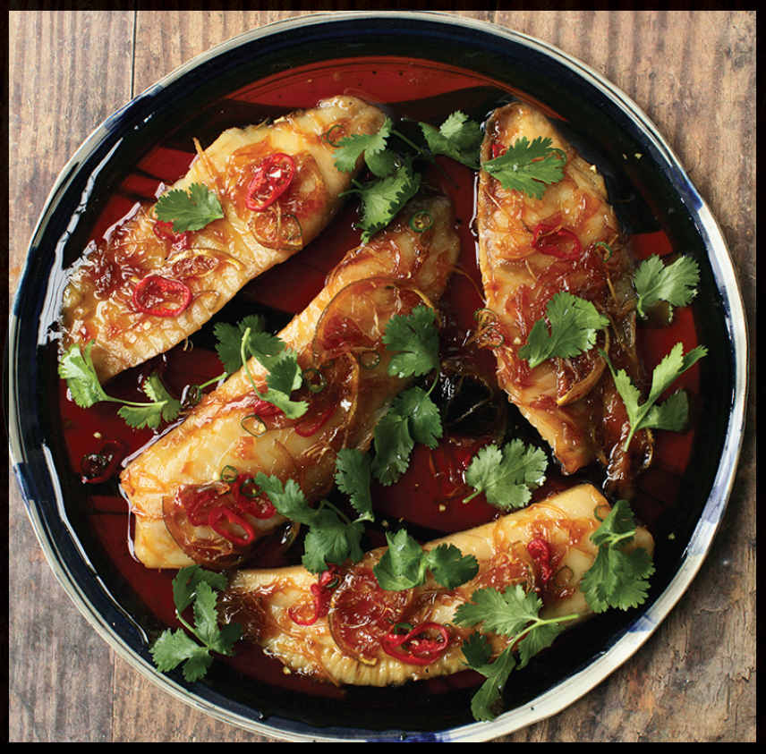

VIETNAMESE FISH BRAISED IN FISH SAUCE CARAMEL
|
Yield Serves 4 |
Active Time 25 minutes Total Time 25 minutes |
INGREDIENTS
For the Braising Liquid:
½ cup (3½ ounces/100 g) sugar
1 tablespoon (15 ml) water
¼ cup (60 ml) fish sauce
½ cup (120 ml) coconut water
To Cook:
1 medium shallot (about 1½ ounces/45 g), thinly sliced
½ ounce (15 g) fresh ginger, thinly slivered
Four 5- to 6-ounce (150 to 180 g) fillets of firm white fish, such as striped bass, sea bass, snapper, or cod
6 to 8 very thin slices lime
1 tablespoon (15 ml) lime juice from 1 lime
1 fresh hot chile, such as Thai bird, serrano, or jalapeño, more or less to taste, thinly sliced
Handful of roughly chopped fresh cilantro leaves
Steamed rice, for serving
Vietnamese fish sauce caramel is used for a variety of braised dishes, but it pairs particularly nicely with fish. In Vietnam, you’ll commonly find it paired with snakehead fish, a semi-amphibious freshwater fish with lots of bones and, to some (including me), a distinctly muddy flavor. In the United States, you’ll more commonly see the dish made with catfish, a similar freshwater fish with a similar muddy flavor. While I don’t begrudge anyone who wants to make it with snakehead (it is, after all, an invasive species), I personally prefer it with the cleaner flavor of cold saltwater fish like striped bass, sea bass, or snapper. Firm-fleshed tilapia is also a fine choice, though it can sometimes have the muddy flavor of farmed fish.
Make sure to have plenty of rice and steamed green vegetables to go with the extra sauce.
DIRECTIONS
1 Make the Braising Liquid: Add the sugar to a wok and add the water. Cook over medium heat, stirring frequently, until the sugar melts into a syrup and cooks down to a dark amber color, 5 to 8 minutes total. Immediately add the fish sauce and coconut water and stir until the sugar is dissolved. Cook until the sauce is reduced by half, about 8 to 10 minutes.
2 To Cook: Add the shallot and ginger, then add the fish fillets in a single layer. Cook, swirling the pan gently, for 3 minutes. Using a thin spatula, carefully flip the fillets and continue cooking just until they are barely cooked through, 2 to 3 minutes longer. Transfer the fillets to a serving plate.
3 Add the lime slices and lime juice to the wok and continue cooking, swirling constantly, until the sauce is reduced to a syrupy glaze. Stir in the chile, drizzle the sauce and lime wheels over the fish, sprinkle with cilantro, and serve with steamed rice.
